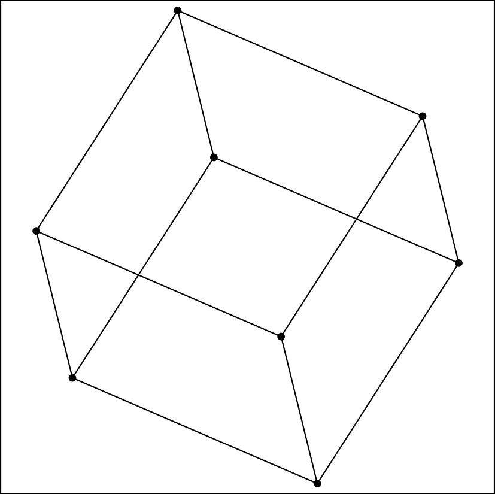
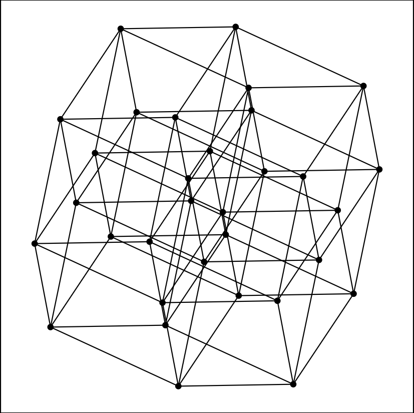
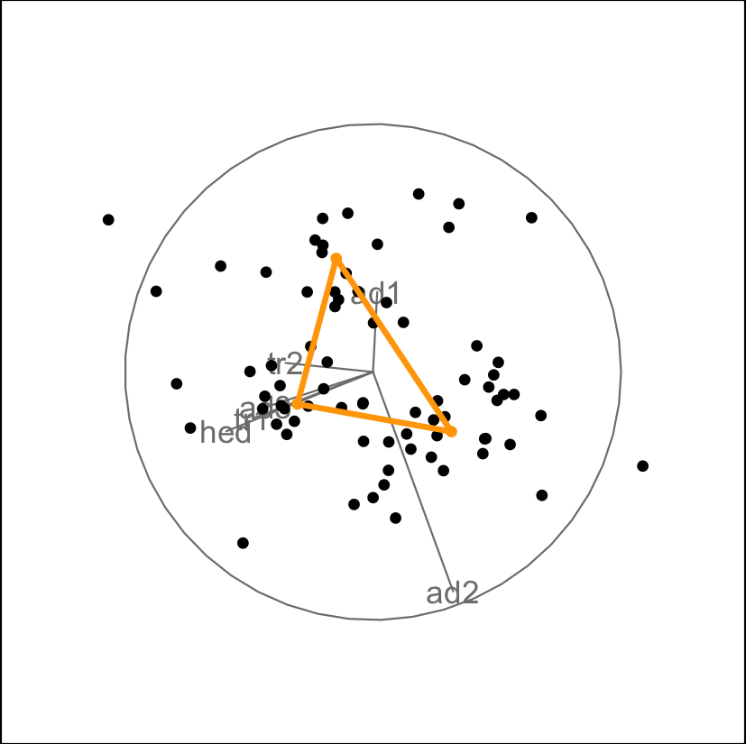

Showing connections between points can be useful in different
applications, including geometric shapes, indicating patterns in
sequential series or showing connections suggested by a model (for
example in clustering). These edges can be added in the 2D scatterplot
display (display_xy) through the edges
argument, and should be specified as a two column integer matrix of the
indices of ends of lines.
For example, we can generate cube vertices and edges using the
geozoo package. The information stored as
points constitutes the input data, and edges
can directly be passed into the display.
# generate 3D cube vertices
cube <- geozoo::cube.iterate(3)
# data is stored points, edges contains the needed two column matrix for connecting points
cube$points
cube$edges
# call grand tour with the scatterplot (xy) display, turning off axes
animate_xy(cube$points, edges = cube$edges, axes = "off")
We can use the same functions for higher dimensional cubes as well (but would not print the data).
cube5 <- geozoo::cube.iterate(5)
animate_xy(cube5$points, edges = cube5$edges, axes = "off")
It can often be useful to connect points with edges, for example sequential points in a time series, or points that are connected by a model. As a simple example we can connect centroids found when clustering the flea dataset:
# get centroids of 3 clusters of the flea data
n <- nrow(flea)
set.seed(1019)
flea_centroids <- stats::kmeans(flea[,1:6], 3)$centers
flea_aug <- rbind(flea[,1:6], flea_centroids)
col <- c(rep("black", n), rep("orange", 3))
flea_edges <- matrix(c(n+1, n+2, n+1, n+3, n+2, n+3), ncol=2, byrow = TRUE)
animate_xy(flea_aug, edges = flea_edges,
col = col, edges.col = "orange",
edges.width = 3)